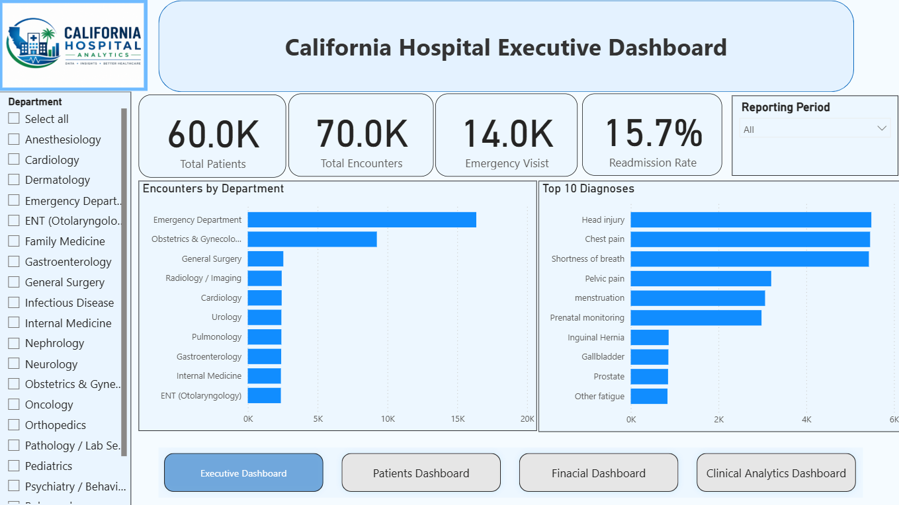
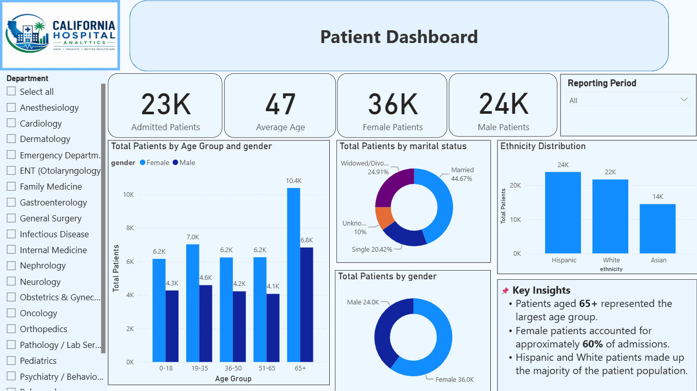
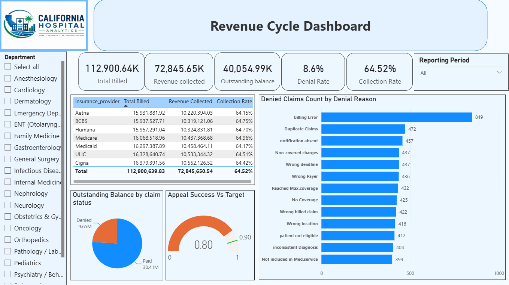
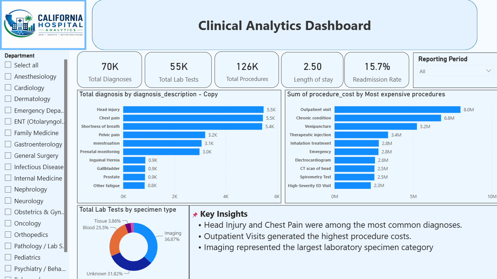

Healthcare Analytics Dashboard
An operational and revenue-cycle dashboard for a hospital system — patient demographics, department workload, clinical activity, and claims performance across 60,000 patients and 70,000 encounters, built across four report pages in Power BI.
The problem
A hospital's patient, clinical, and billing data lives across separate operational tables, but on its own it doesn't answer the questions administrators actually ask: which departments carry the heaviest patient load, where readmissions concentrate, how much revenue is sitting stuck in denied or unpaid claims, and whether the claims-appeal process is actually recovering that revenue.
Data model
Unlike the Supply Chain project, this data arrived already clean and relationally
structured, so no separate SQL schema-building layer was needed — nine source tables
(patients, providers, encounters,
diagnoses, procedures, lab_tests,
medications, claims_and_billing, denials) were
connected directly into the Power BI model. encounters sits at the
center — one row per patient visit — joined out to patients and providers by
patient_id/provider_id, and out to the clinical and
financial detail tables by encounter_id / claim_id.
Key findings
- Readmission rate holds at 15.7% across the full patient population — a consistent enough rate across departments that it reads as a system-wide discharge and follow-up issue rather than one department's problem.
- The Emergency Department is by far the busiest, driving more encounter volume than any other department, with Obstetrics & Gynecology a distant second — the two together account for a disproportionate share of total visits.
- Collection rate is nearly identical across every major insurance payer (~64–65% for Aetna, BCBS, Humana, Medicare, Medicaid, UHC, and Cigna alike), which points to a systemic billing/collections gap rather than one difficult payer.
- $40.1M of $112.9M billed is still outstanding, and the claims-appeal success rate (80%) is trailing its own 90% target — meaning a meaningful slice of denied revenue isn't being recovered even after appeal.
- Outpatient visits and chronic-condition management are the two costliest procedure categories ($8.0M and $6.8M respectively) — not emergency or acute procedures, which is worth a second look for cost-control purposes.
From the Power BI report
Built natively in Power BI Desktop with the DAX measures described above — four report pages, shown below.



